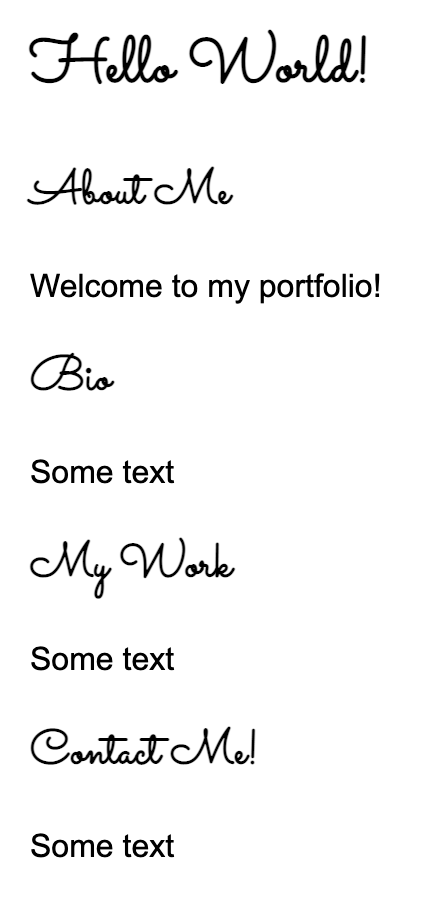

Assignments > HW3: Assigning CSS Properties Using Selectors
Due on Mon, 02/06 @ 11:59PM. 15 Points.
Your Tasks
Before you begin, please download the Homework 3 starter files.
1. Selector Practice: CSS Diners (4pts)
Complete the first 14 steps of CSS Diner. When you’re done, take a screenshot showing you completed all of the levels. Your screenshot should have a green checkmark next to each level (like the one below but with checkmarks).
Note that Quiz 1 will expect you to know all of the selectors, so make sure that you understand and review each of the 14 steps to study for Quiz 1.
2. Practice Assigning CSS Rules Using Selectors (6pts)
For Task #2, you will style the index.html file – by editing styles.css – so that it looks like this video (also pictured below).
To do this, open the exercise02 folder and complete the tasks below. You may only edit the stylesheet (styles.css). Do not edit anything inside index.html. Note that there are many ways to come up with a correct answer.
- [1pt] Give the main section some margin on the left and right sides so that it looks like the image shown above (try
15vw). - [1pt] Set the background color of the first, third, and fifth cards to
#EEEEEE. - [1pt] Set the background color of the second, fourth, and sixth cards to
#BCE5D6. - [1pt] Make the images inside the first, third, and fifth card circular.
- [1pt] Set the font family of all of the text to
'Courier New'. Remember that fonts cascade, so you could just set it in one place (but there are many other ways to do it as well). - [1pt] Set the font weight of the first paragraph and the paragraph inside the footer to bold. The paragraphs inside the cards should NOT be bold.
3. Practice Importing a Google Font (5pts)
Open exercise03 and use CSS to assign a custom Google Font font to the h1 and h2 tags.
- Note: the example shown below is using the “Sacramento” font (imported from Google Fonts), but you may use any font that you want.
Feel free to Google “How to use a Google Font in CSS” if you need help, or consult one or more of the links provided below:
- https://www.w3docs.com/snippets/css/how-to-import-google-fonts-in-css-file.html
- https://developers.google.com/fonts/docs/getting_started
- https://www.w3schools.com/css/css_font_google.asp

Before you submit:
- Ensure that only the
h1andh2tags have been assigned the font (and not all of the text).
What to Submit
Please Read Carefully: To submit Homework 3, please paste the following links into the Moodle under the Homework 3 submission section:
- A link to your homepage (from Tutorial 3) on GitHub pages, which should link to your
hw03assignment (and previous tutorials and classwork you have done). - A link to your GitHub code repository (where your code files are stored).
IMPORTANT: Make sure that your CSS Diner screenshot is saved in your hw03/exercise01 folder before you commit / send your files to GitHub.